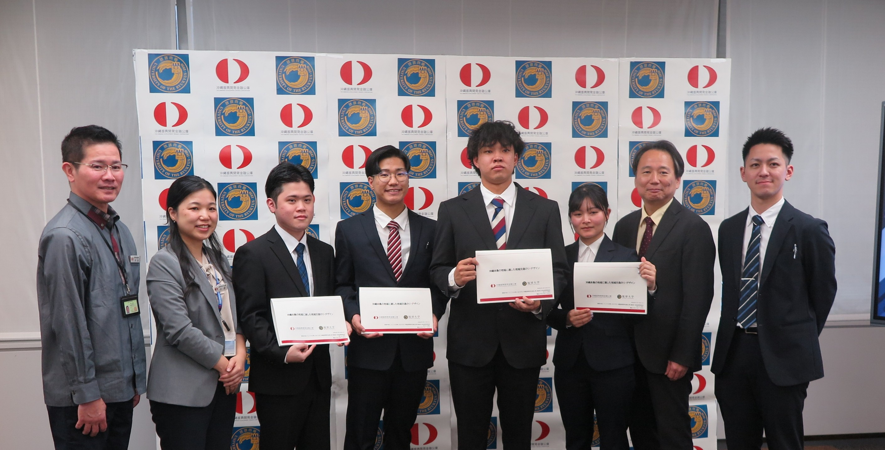
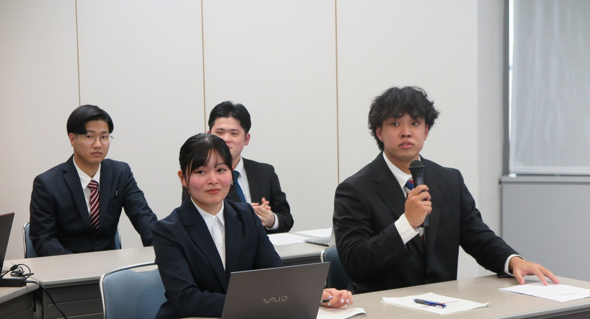
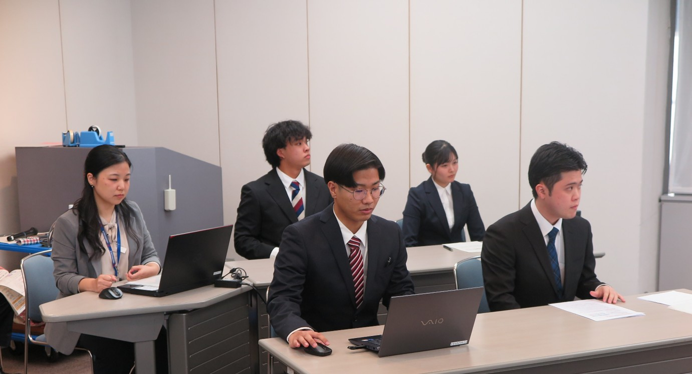
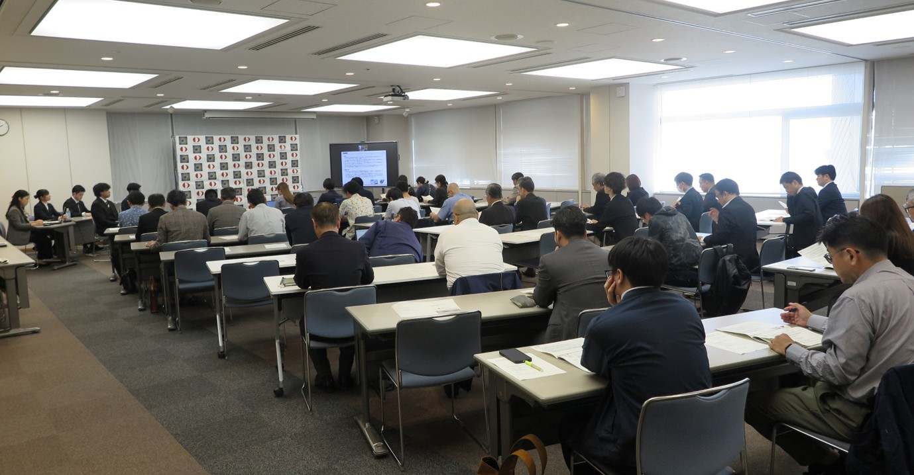
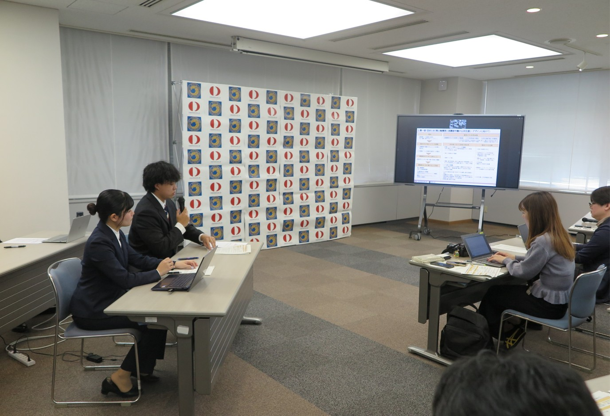
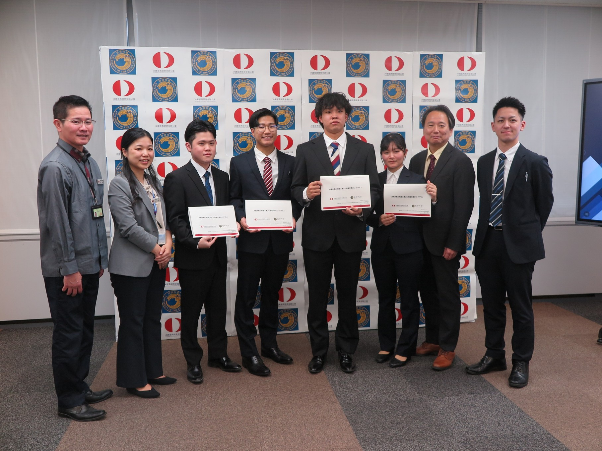

2026年3月10日（火），沖縄振興開発金融公庫 本店（那覇市おもろまち）にて，沖縄振興開発金融公庫・琉球大学による「沖縄本島の地域に適した地域交通のリ・デザイン」に関する共同調査の成果発表会が開催されました．この会では，社会システム計画学分野の新里莉理さん（4年生）・比嘉悠さん（同）・渡慶次諒さん（3年生）・名嘉孝光さん（同）が以下の3部について発表および提言を行いました． On March 10, 2026 (Tue.), a presentation of joint research results on "Redesigning Local Transportation Suitable for Okinawa Island" by the Okinawa Development Finance Corporation and the University of the Ryukyus was held at the Corporation's head office (Omoromachi, Naha). Students Riri Shinzato (Year 4), Yu Higa (Year 4), Ryo Tokeshi (Year 3), and Takaaki Naka (Year 3) from the Social Systems Planning program presented proposals in the following three sections.
第1部：県土軸の形成と那覇都市圏の公共交通リ・デザイン
第2部：交通不便・空白地域における公共交通リ・デザイン
第3部：誰一人取り残さない公共交通リ・デザイン〜移動制約者に着目して〜
Part 1: Formation of the prefectural axis and redesign of public transport in the Naha metropolitan area
Part 2: Redesign of public transport in inconvenient and underserved areas
Part 3: Leaving no one behind in public transport redesign — focusing on those with mobility constraints
詳細は本学や沖縄振興開発金融公庫のホームページなどにも掲載されておりますので，ご確認ください． For more details, please visit the websites of the University of the Ryukyus and the Okinawa Development Finance Corporation.
Links
Photos





